Frontier vision models like GPT-4o are remarkably good at understanding sequences of video frames. They can describe what's happening, identify objects and their relationships, and segment activities in time. The catch is cost: it can get expensive to use them to generate annotations for hours of footage.
So as a weekend experiment (which took longer than a weekend), I wanted to try out a hypothesis:
Data
I chose a set of egocentric (first-person view) PC-building videos for the data. It's a good testbed because the vocabulary is bounded (the objects/components are fairly standard) and the actions are structured (there's a logical build sequence), and since the view is (mostly) egocentric, irrelevant objects/events can be mostly avoided in the annotations.
A quick YouTube search-and-filter process yielded 9 egocentric videos of people building PCs. After trimming some irrelevant segments, the net length of footage is ~8.5 hours. Here are some representative frames (each column is a different video):
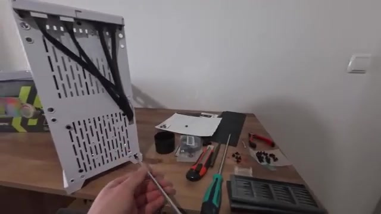
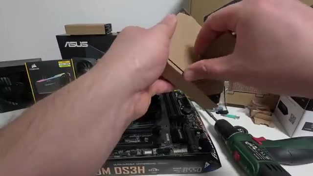
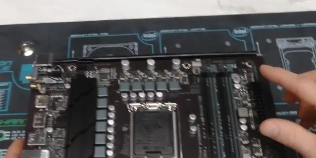
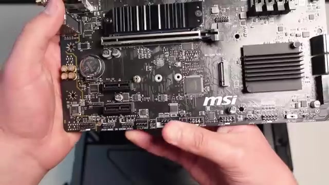
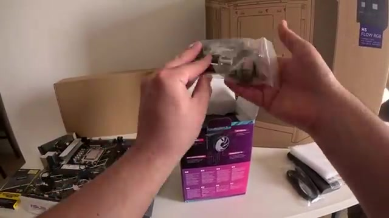
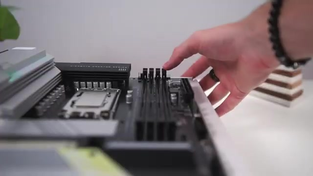
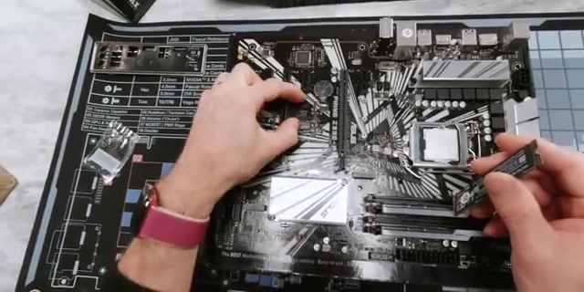
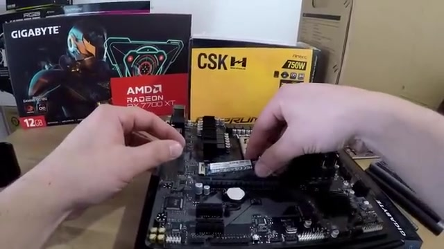
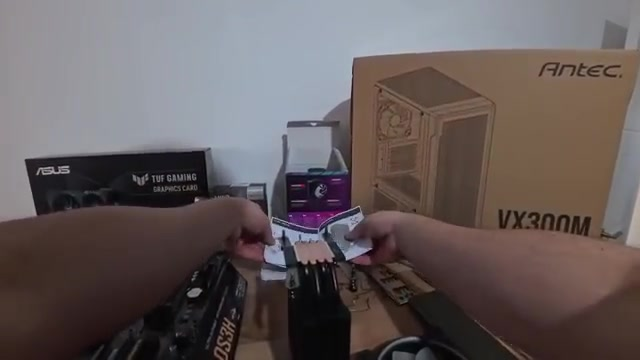
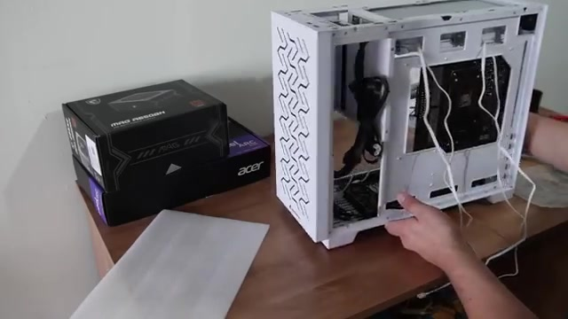
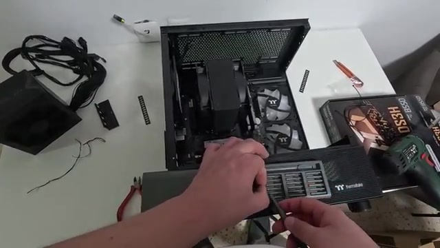
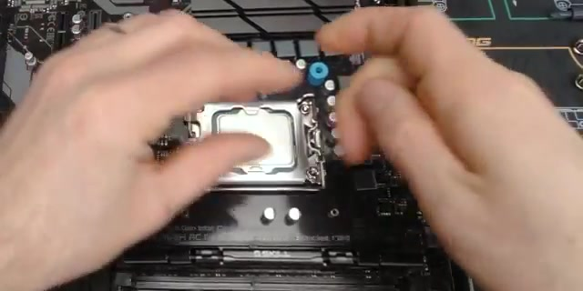
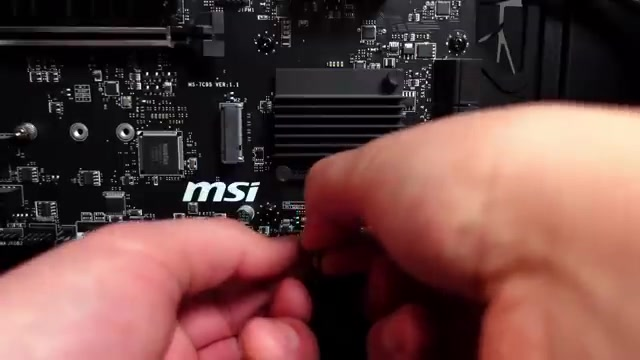
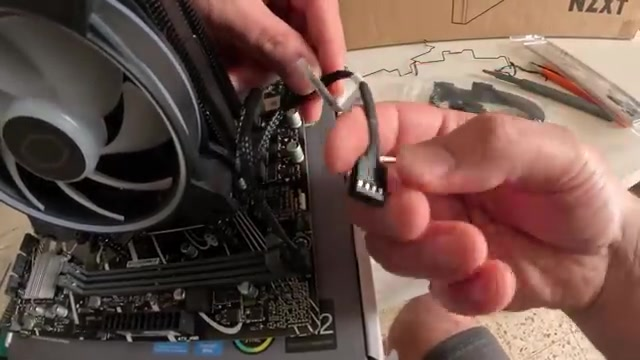
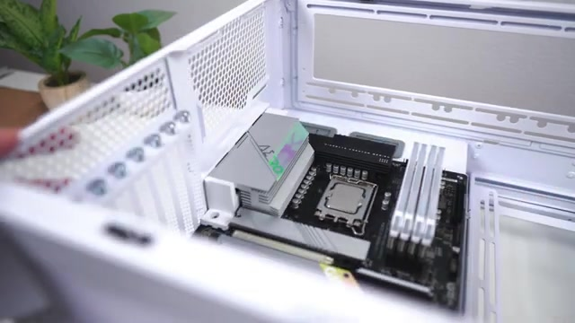
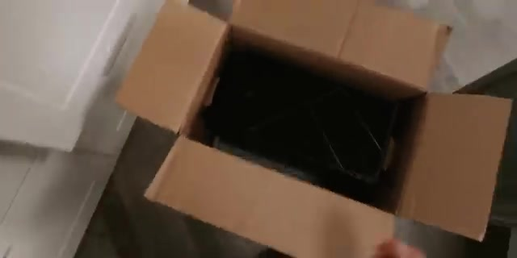
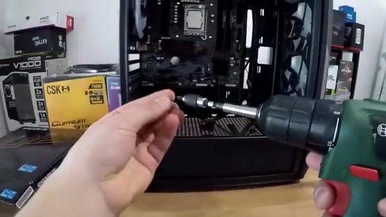
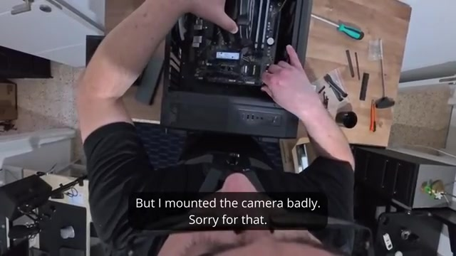
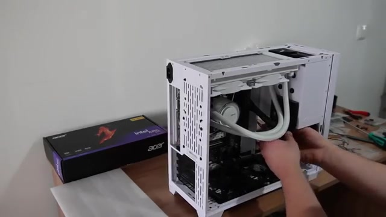
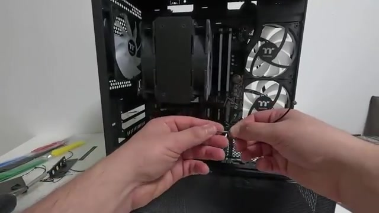
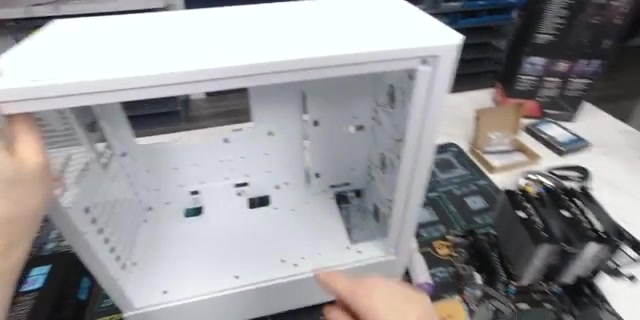
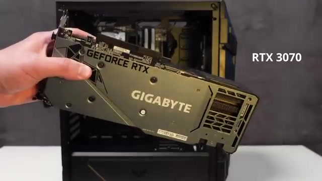
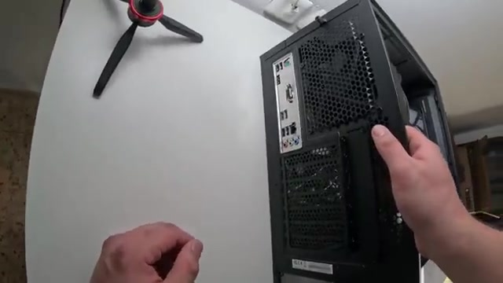
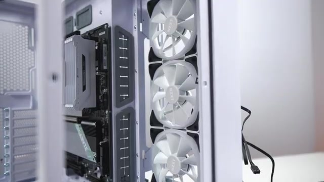
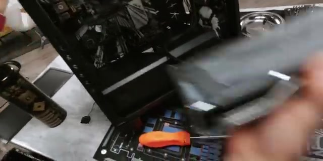
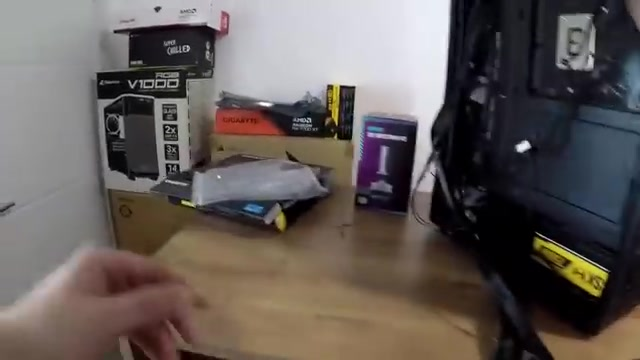
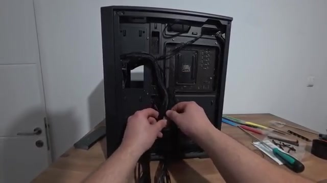
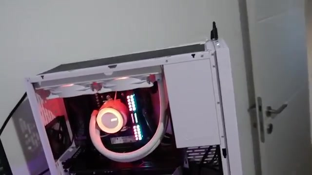
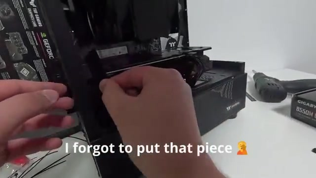
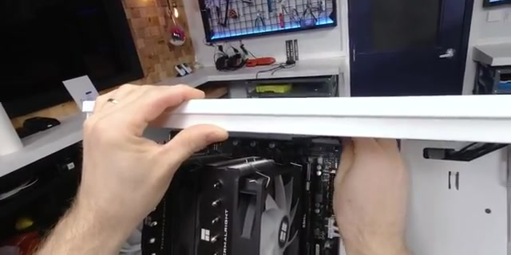
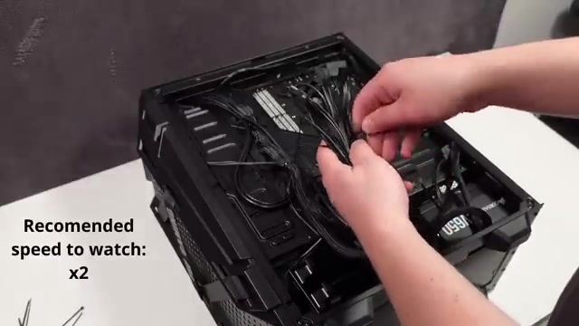
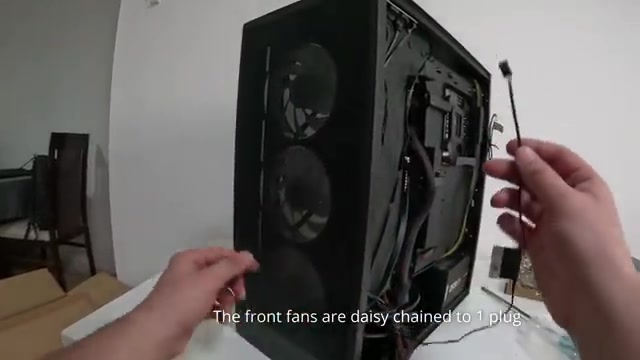
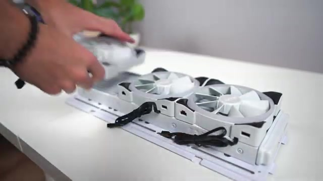
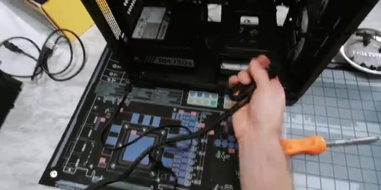
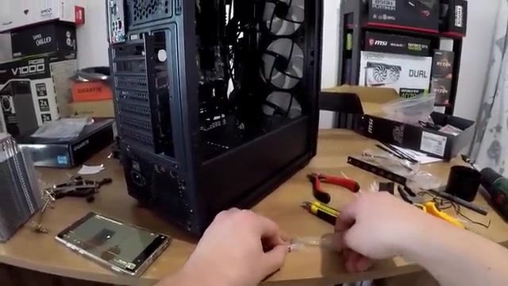
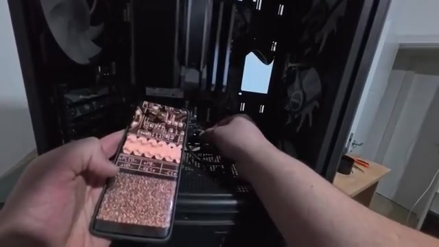
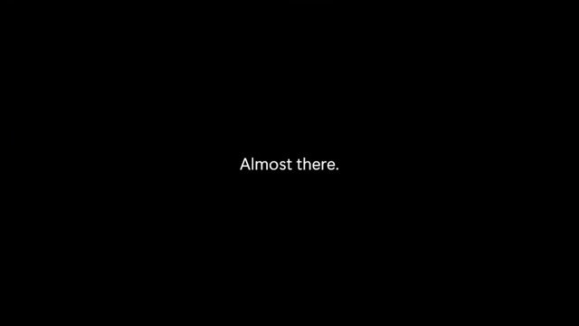
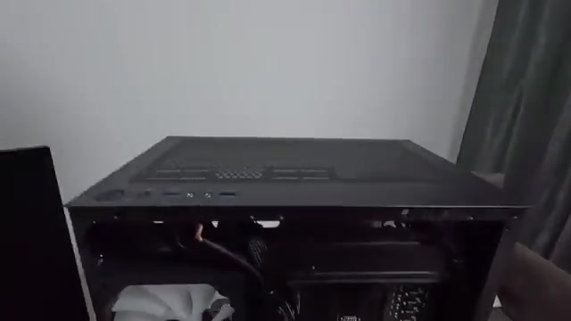
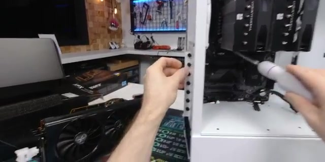
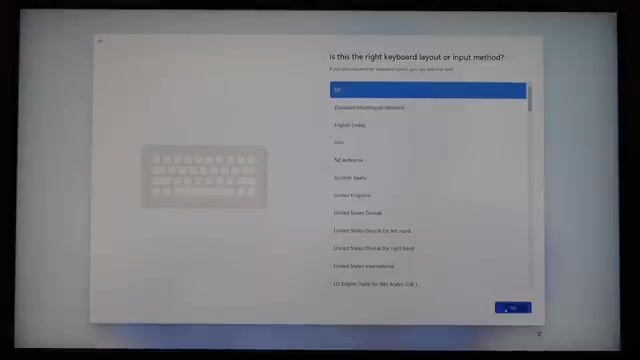
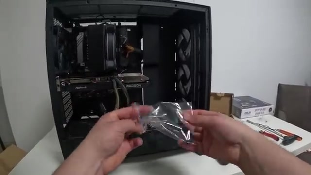
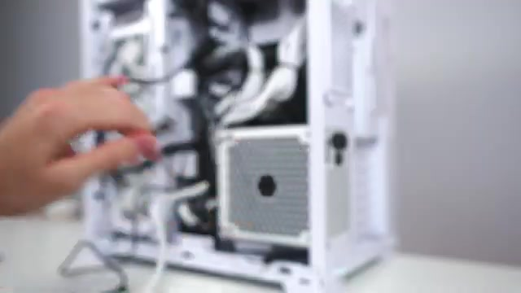
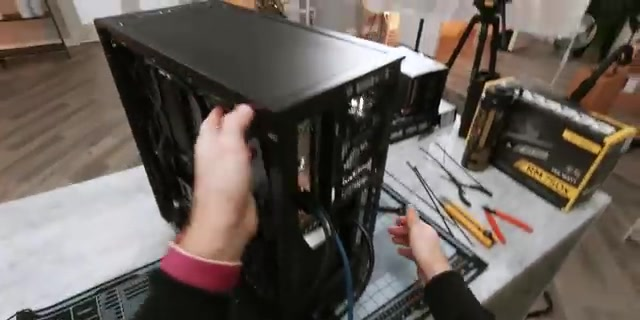
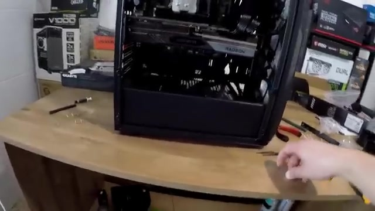
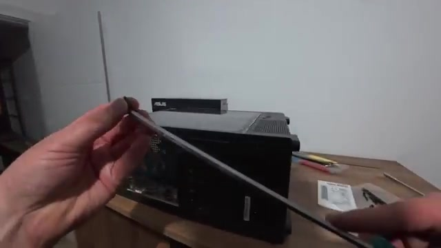
Overview
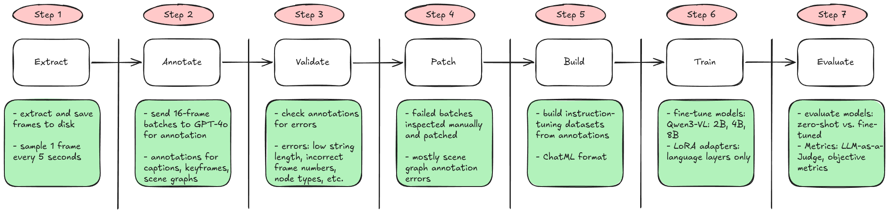
Step 1Frame Extraction
This step samples the frames to be sent for annotation: for each video, k frames every
n
seconds are sampled using ffmpeg. For this experiment, I set k = 1; n = 5, i.e., 1
frame is sampled every 5 seconds. That's 720 frames/hour of footage.
Step 2GPT-4o Annotations
In this step, each video's sampled frames are encoded as base64 JPEGs and sent to GPT-4o in batches of 16 frames. Three annotation types are produced for every batch:
A 3-5 sentence description of what's happening in the clip.
Nodes (objects with types from a pre-defined taxonomy) and edges (spatial and action relationships). Structured, graph-form understanding of the scene.
Temporal segments specifying which step (activity) is happening, and at which frame range.
Prompts
SYSTEM:
You are a video understanding assistant. Given a sequence of video frames, produce
a single fluent paragraph (3-5 sentences) describing what is happening in the video.
Focus on the main activity, the agents involved, and any notable objects or state changes.
Be specific and grounded in what is visually present. Do not speculate about off-screen events.
USER:
Below are {n_frames} frames sampled from a {duration_seconds:.1f}-second video
at approximately {fps:.2f} fps. Frame resolution: {width}×{height}.
Describe what is happening in this video.
Respond with a JSON object:
{
"caption": "<your description here>"
}SYSTEM:
You are a video scene graph generator. Given a sequence of video frames and a fixed
taxonomy, produce a scene graph describing the objects, their relationships, and their
states visible in the video.
RULES:
- Use ONLY the node types, edge types, and state attributes from the taxonomy below.
- Do not invent new vocabulary. If something doesn't fit, pick the closest taxonomy term.
- Assign a unique short ID to each node (n0, n1, n2, ...).
- Include only objects and relationships that are clearly visible in the frames.
DIRECTIONALITY RULES:
- Edge direction is always src → dst.
- Edges marked [src: Hands] MUST have a Hands node as src. Never use a component,
cable, or tool as src for these edges.
Correct: {"src": "n0", "dst": "n1", "type": "screwing"} where n0 is Hands
Wrong: {"src": "n1", "dst": "n0", "type": "screwing"} where n1 is Screwdriver
- Edges marked [symmetric] may go in either direction; choose the most natural reading.
- For spatial edges without a [src:] marker, src is the smaller/contained/dependent
part and dst is the larger/containing/receiving part:
CPU inserted_in Motherboard (not Motherboard inserted_in CPU)
Motherboard mounted_on PC_Case (not PC_Case mounted_on Motherboard)
RAM seated_in Motherboard (not Motherboard seated_in RAM)
Component inside PC_Case (not PC_Case inside Component)
- For state edges (is_installed, is_unboxed, is_powered_off, is_unseated, is_secured),
src is always the component whose state is described; dst is a nearby related node
(the slot, case, or board it relates to).
TAXONOMY:
{taxonomy_str}
USER:
Below are {n_frames} frames sampled from a {duration_seconds:.1f}-second video.
Generate a scene graph for this video using ONLY the taxonomy terms above.
Respond with a JSON object matching this schema exactly:
{
"nodes": [
{"id": "n0", "type": "<node_type>", "label": "<human-readable instance name>"}
],
"edges": [
{"src": "n0", "dst": "n1", "type": "<edge_type>"}
]
}SYSTEM:
You are a video activity segmentation assistant. Given a sequence of video frames and a
list of valid activity labels, identify the temporal keysteps in the video.
RULES:
- Use ONLY the labels from the activity labels list below.
- Steps must be in temporal order with non-overlapping frame ranges.
- Start and end frame indices must be within [0, {n_frames_minus_one}].
- Confidence is your certainty that the label and boundaries are correct (0.0–1.0).
- Omit very short transitional frames (< 2 frames) unless clearly a distinct step.
ACTIVITY LABELS:
{activity_labels_str}
USER:
Below are {n_frames} frames sampled from a {duration_seconds:.1f}-second video.
Frame indices run from 0 to {n_frames_minus_one}.
Identify each distinct activity step in temporal order.
Respond with a JSON object:
{
"keysteps": [
{
"label": "<activity_label>",
"start_frame": <int>,
"end_frame": <int>,
"confidence": <float>
}
]
}Example annotation
The API calls use JSON schema response format, i.e., GPT-4o is forced to return structured JSON rather than free text. Here's an example annotation for these 16 frames:
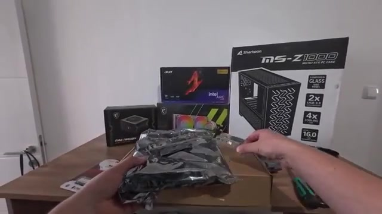
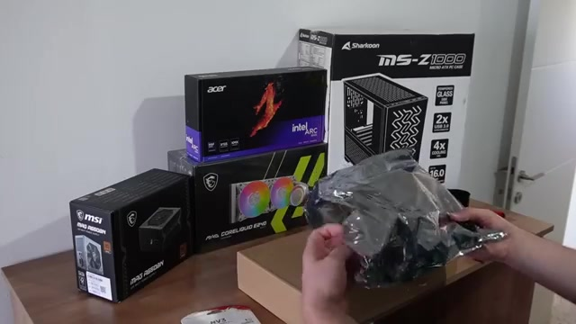
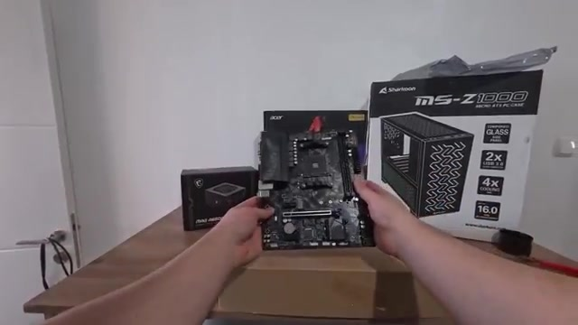
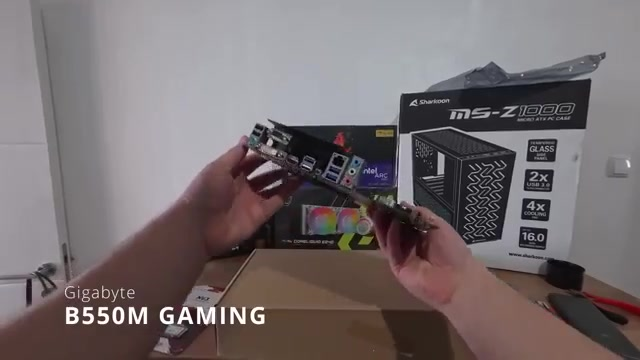
{
"caption": "The video depicts the process of assembling computer components on a desk. Initially, a person opens packages containing various components, including a Gigabyte B550M Gaming motherboard and an AMD Ryzen 5 5600x processor. The individual proceeds to install the processor onto the motherboard. Following this, a Kingston NV3 1TB NVMe storage drive is installed onto the motherboard. The background shows several pieces of computer hardware packaging, such as a case and a power supply box, indicating a setup of new computer components."
}{
"keysteps": [
{"label": "remove_anti_static_bag", "start_frame": 0, "end_frame": 2, "confidence": 0.9},
{"label": "inspect_component", "start_frame": 3, "end_frame": 5, "confidence": 0.8},
{"label": "align_cpu", "start_frame": 6, "end_frame": 7, "confidence": 0.9},
{"label": "seat_cpu", "start_frame": 8, "end_frame": 9, "confidence": 0.9},
{"label": "mount_m2_drive", "start_frame": 11, "end_frame": 12, "confidence": 0.9},
{"label": "screw_m2_drive", "start_frame": 13, "end_frame": 14, "confidence": 0.8}
]
}{
"nodes": [
{"id": "n0", "type": "Hands", "label": "Person's Hands"},
{"id": "n1", "type": "Motherboard", "label": "Gigabyte B550M Gaming Motherboard"},
{"id": "n2", "type": "Box", "label": "Motherboard Box"},
{"id": "n3", "type": "CPU", "label": "AMD Ryzen 5 5600x CPU"},
{"id": "n4", "type": "M2_Drive", "label": "Kingston NV3 1TB NVMe"},
{"id": "n5", "type": "Box", "label": "CPU Box"},
{"id": "n6", "type": "Box", "label": "NVMe Box"}
],
"edges": [
{"src": "n0", "dst": "n1", "type": "holds"},
{"src": "n1", "dst": "n2", "type": "is_unboxed"},
{"src": "n0", "dst": "n3", "type": "holds"},
{"src": "n3", "dst": "n5", "type": "is_unboxed"},
{"src": "n4", "dst": "n6", "type": "is_unboxed"},
{"src": "n0", "dst": "n4", "type": "holds"},
{"src": "n0", "dst": "n3", "type": "inserting"},
{"src": "n1", "dst": "n3", "type": "seated_in"},
{"src": "n0", "dst": "n4", "type": "inserting"},
{"src": "n1", "dst": "n4", "type": "seated_in"}
]
}Here's an interactive depiction of the above scene graph rendered using pyvis:
Costs and Latency
I used this opportunity to try out langfuse for observing costs and latency per
annotation type. Across all annotation types, a total of 1146 batches were annotated in ~1 hour 22 mins,
costing ~$7.24 in total.
Here's the breakdown:
Using a pre-defined taxonomy
To ensure that the annotation process doesn't introduce duplicate terminology (e.g., CPU socket
and processor slot) and illogical object relationships (e.g.,
Screwdriver -> holds -> Hand), a domain taxonomy is used, which specifies a controlled
vocabulary for node types, edge types, activity labels along with edge directionality constraints. It gets
injected directly
into the system prompt, and every response is validated against it. I used an LLM (Gemini) to generate a
taxonomy
based on the most common components and steps in a typical PC building video. Here's what the taxonomy looks
like:
# configs/taxonomy.yaml
# PC building (first-person view) taxonomy.
# Keep concise — this is injected verbatim into prompts.
domain: "pc_building"
node_type_colors:
agents: "#e06c75" # red — the builder's hands
components: "#4c8eda" # blue — PC parts
cables: "#e5c07b" # amber — wiring
tools: "#98c379" # green — instruments
consumables: "#c678dd" # purple — paste, ties
packaging: "#56b6c2" # teal — boxes, bags
node_types:
agents:
- Hands # the builder's hands (first-person; full body rarely visible)
components:
- CPU
- GPU
- Motherboard
- RAM
- M2_Drive # NVMe/SATA M.2 SSD
- SATA_Drive # 2.5" or 3.5" HDD/SSD
- PSU # power supply unit
- PC_Case
- CPU_Cooler # air or AIO cooler
- Case_Fan
- IO_Shield
- Standoff # brass motherboard standoff
- GPU_Bracket_Screw # PCIe slot cover screw/bracket
cables:
- ATX_Power_Cable # 24-pin motherboard power
- CPU_Power_Cable # 4/8-pin EPS connector
- PCIe_Power_Cable # 6/8/16-pin GPU power
- SATA_Power_Cable
- SATA_Data_Cable
- Front_Panel_Cable # power SW, reset SW, HDD LED, USB headers
- Fan_Cable # 3/4-pin fan connector
tools:
- Screwdriver
- Anti_Static_Strap
consumables:
- Thermal_Paste
- Cable_Tie
packaging:
- Box
- Anti_Static_Bag
edge_types:
spatial:
- name: holds # Hands holds Component
direction: asymmetric
src_types: [Hands, Cable_Tie]
- name: inserted_in # CPU inserted_in Motherboard socket
direction: asymmetric
- name: mounted_on # Motherboard mounted_on PC_Case
direction: asymmetric
- name: connected_to # Cable connected_to Component
direction: symmetric
- name: seated_in # RAM seated_in slot
direction: asymmetric
- name: next_to
direction: symmetric
- name: inside # Component inside PC_Case
direction: asymmetric
action:
- name: screwing # Hands screwing Screw into Motherboard
direction: asymmetric
src_types: [Hands, Screwdriver]
- name: aligning # Hands aligning Component
direction: asymmetric
src_types: [Hands]
- name: inserting # Hands inserting Component into slot
direction: asymmetric
src_types: [Hands]
- name: removing # Hands removing Component
direction: asymmetric
src_types: [Hands]
- name: applying # Hands applying Thermal_Paste to CPU
direction: asymmetric
src_types: [Hands, Thermal_Paste]
- name: routing # Hands routing Cable through PC_Case
direction: asymmetric
src_types: [Hands]
- name: pressing # Hands pressing RAM/GPU into slot
direction: asymmetric
src_types: [Hands]
- name: connecting # Hands connecting Cable to Component
direction: asymmetric
src_types: [Hands, Front_Panel_Cable]
- name: disconnecting
direction: asymmetric
src_types: [Hands]
state:
- name: is_installed # component fully secured in place
direction: asymmetric
- name: is_unboxed # removed from retail packaging
direction: asymmetric
- name: is_powered_off
direction: asymmetric
- name: is_unseated # partially or fully removed from slot
direction: asymmetric
- name: is_secured # screwed down / latched
direction: asymmetric
activity_labels:
# Use these exact strings as keystep labels.
unboxing:
- unbox_component
- remove_anti_static_bag
- inspect_component
case_prep:
- install_io_shield
- install_standoffs
- remove_pcie_bracket
- remove_side_panel
cpu_install:
- open_cpu_socket
- align_cpu
- seat_cpu
- close_cpu_socket_lever
cooling:
- apply_thermal_paste
- mount_cooler
- connect_cooler_fan
ram_install:
- open_ram_slot_latches
- align_ram
- seat_ram
storage:
- mount_m2_drive
- screw_m2_drive
- mount_sata_drive
- connect_sata_cable
motherboard:
- place_motherboard_in_case
- screw_motherboard
gpu_install:
- align_gpu
- seat_gpu
- screw_gpu_bracket
- connect_pcie_power
psu_cabling:
- install_psu
- connect_atx_power
- connect_cpu_power
- connect_front_panel
- connect_case_fans
- route_cables
- cable_tie
verification:
- power_on_test
- bios_check
- close_side_panel
Steps 3 + 4Validation & Error Patching
To ensure that there were no bogus annotations (empty strings, non-existing components, illogical object relationships, etc.), there's a basic validation step after the annotations are generated. These were the checks used:
| Type | Checks |
|---|---|
| Caption | Is a string, at least 10 characters |
| Scene Graph | Node/edge types in taxonomy; edge src/dst reference existing node IDs; src_types
constraints satisfied |
| Keysteps | Label in taxonomy; start_frame ≤ end_frame; indices within frame count |
Failed batches are written to disk as pretty-printed JSON and then patched manually.
All validation failures which I encountered were scene graph annotations failing edge directionality constraints. These were relatively easy to spot and fix manually.
Step 5Building the Instruction-Tuning Dataset
Once the annotations are validated and patched, they are assembled into
JSONL files in the ChatML format commonly used by multimodal instruction-tuning frameworks.
Data splits
The data is split into train / val / test (80 : 10 : 10 ratio) at the video level instead of
the
example level, since if frames from the same video appear in both train and test,
the model can trivially
memorize visual context and inflate performance. Each record corresponds to one annotation batch of a single
annotation type. Here's a sample record:
{
"messages": [
{
"role": "user",
"content": [
{"type": "image", "image": "/data/frames/2HqlcTSlYEA/frame_0000.jpg"},
{"type": "image", "image": "/data/frames/2HqlcTSlYEA/frame_0001.jpg"},
{"type": "image", "image": "/data/frames/2HqlcTSlYEA/frame_0002.jpg"},
{"type": "image", "image": "/data/frames/2HqlcTSlYEA/frame_0003.jpg"},
{"type": "image", "image": "/data/frames/2HqlcTSlYEA/frame_0004.jpg"},
{"type": "image", "image": "/data/frames/2HqlcTSlYEA/frame_0005.jpg"},
{"type": "image", "image": "/data/frames/2HqlcTSlYEA/frame_0006.jpg"},
{"type": "image", "image": "/data/frames/2HqlcTSlYEA/frame_0007.jpg"},
{"type": "image", "image": "/data/frames/2HqlcTSlYEA/frame_0008.jpg"},
{"type": "image", "image": "/data/frames/2HqlcTSlYEA/frame_0009.jpg"},
{"type": "image", "image": "/data/frames/2HqlcTSlYEA/frame_0010.jpg"},
{"type": "image", "image": "/data/frames/2HqlcTSlYEA/frame_0011.jpg"},
{"type": "image", "image": "/data/frames/2HqlcTSlYEA/frame_0012.jpg"},
{"type": "image", "image": "/data/frames/2HqlcTSlYEA/frame_0013.jpg"},
{"type": "image", "image": "/data/frames/2HqlcTSlYEA/frame_0014.jpg"},
{"type": "image", "image": "/data/frames/2HqlcTSlYEA/frame_0015.jpg"},
{
"type": "text",
"text": "Identify all visible objects and their spatial and action relationships as a scene graph."
}
]
},
{
"role": "assistant",
"content": [
{
"type": "text",
"text": "{\"nodes\":[{\"id\":\"n0\",\"type\":\"Hands\",\"label\":\"Person's Hands\"},{\"id\":\"n1\",\"type\":\"Motherboard\",\"label\":\"Gigabyte B550M Gaming Motherboard\"},{\"id\":\"n2\",\"type\":\"Box\",\"label\":\"Motherboard Box\"},{\"id\":\"n3\",\"type\":\"CPU\",\"label\":\"AMD Ryzen 5 5600x CPU\"},{\"id\":\"n4\",\"type\":\"M2_Drive\",\"label\":\"Kingston NV3 1TB NVMe\"},{\"id\":\"n5\",\"type\":\"Box\",\"label\":\"CPU Box\"},{\"id\":\"n6\",\"type\":\"Box\",\"label\":\"NVMe Box\"}],\"edges\":[{\"src\":\"n0\",\"dst\":\"n1\",\"type\":\"holds\"},{\"src\":\"n1\",\"dst\":\"n2\",\"type\":\"is_unboxed\"},{\"src\":\"n0\",\"dst\":\"n3\",\"type\":\"holds\"},{\"src\":\"n3\",\"dst\":\"n5\",\"type\":\"is_unboxed\"},{\"src\":\"n4\",\"dst\":\"n6\",\"type\":\"is_unboxed\"},{\"src\":\"n0\",\"dst\":\"n4\",\"type\":\"holds\"},{\"src\":\"n0\",\"dst\":\"n3\",\"type\":\"inserting\"},{\"src\":\"n1\",\"dst\":\"n3\",\"type\":\"seated_in\"},{\"src\":\"n0\",\"dst\":\"n4\",\"type\":\"inserting\"},{\"src\":\"n1\",\"dst\":\"n4\",\"type\":\"seated_in\"}]}"
}
]
}
]
}Step 6Training Qwen3-VL LoRA adapters
I chose LoRA training since I wanted short training runs for this experiment. For the base models, I picked Qwen3-VL with multiple parameter variants (2B, 4B, 8B). Qwen3-VL is one of the recent strong open-weights multimodal LLMs available, and using the different parameter variants makes it easy to reason about performance scaling over parameter size.
The fine-tuning was done using the axolotl LLM training framework. I trained only on the
language model layers, assuming the vision
layers are already adequate for this domain. Here is a sample config file
which I had used for the 4B model:
base_model: Qwen/Qwen3-VL-4B-Instruct
output_dir: outputs/qwen3vl_4b/
processor_type: AutoProcessor
chat_template: qwen2_vl # Qwen3-VL reuses qwen2-vl template
skip_prepare_dataset: true
remove_unused_columns: false
sample_packing: false
datasets:
- path: outputs/dataset_normalized/train.jsonl
type: chat_template
test_datasets:
- path: outputs/dataset_normalized/val.jsonl
type: chat_template
sequence_len: 3904
# Training
bf16: true
fp16: false
tf32: false
torch_dtype: bfloat16
flash_attention: true
gradient_checkpointing: true
gradient_checkpointing_kwargs:
use_reentrant: false
requires_inputs_embeds_grad: true
num_epochs: 8
warmup_ratio: 0.03
lr_scheduler: cosine
optimizer: adamw_torch_fused
micro_batch_size: 2
gradient_accumulation_steps: 8
learning_rate: 2e-4
# LoRA language model layers only (vision tower frozen)
adapter: lora
lora_r: 16
lora_alpha: 32
lora_dropout: 0.05
lora_target_modules: 'model.language_model.layers.[\d]+.(mlp|self_attn).(up|down|gate|q|k|v|o)_proj'
# Best-checkpoint-only strategy
eval_strategy: steps
eval_steps: 20
save_strategy: steps
save_steps: 20
save_total_limit: 1
load_best_model_at_end: true
metric_for_best_model: eval_loss
greater_is_better: false
save_safetensors: true
dataset_prepared_path: outputs/_prepared_cache/
The loss curves show a fast plateuing of all three models, but the 8B model stabilizes at a higher loss, while the other two models track almost identically:
Step 7Evaluation
Since we do not have manually curated annotations, a key assumption I make is that the GPT-4o annotations are human-quality ground truth (which is a really strong assumption). I evaluated the models using a combination of hard (objective) metrics and LLM-as-a-Judge API calls. I chose GPT-5.5 as the Judge because it is currently the strongest OpenAI model and required minimal changes to existing code. I describe the metrics below:
| Metric Name | Annotation Type | Metric Type | Description |
|---|---|---|---|
factual_accuracy |
Caption | LLM-as-a-Judge | Evaluates if the described objects and actions are actually correct on a 1-5 scale. |
completeness |
Caption | LLM-as-a-Judge | Measures if the prediction covers the main events from the ground truth on a 1-5 scale. |
specificity |
Caption | LLM-as-a-Judge | Checks if the text is grounded in specific visible details rather than being generic (1-5 scale). |
node_type_f1 |
Scene Graph | Hard Metric | A token-level multiset F1 score measuring how well the predicted object types match the ground truth. |
edge_type_f1 |
Scene Graph | Hard Metric | A token-level multiset F1 score measuring how well the predicted relationship types match the ground truth. |
semantic_quality |
Scene Graph | LLM-as-a-Judge | Evaluates if the predicted nodes and edges capture the same overall scene meaning as the ground truth on a 1-5 scale. |
label_f1 |
Keysteps | Hard Metric | A multiset F1 score evaluating how well the predicted activity labels match the actual labels. |
mean_iou |
Keysteps | Hard Metric | Calculates the average temporal overlap (Intersection over Union) of the predicted step frame ranges versus the ground truth. |
ordering_quality |
Keysteps | LLM-as-a-Judge | Evaluates the temporal coherence and correct chronological ordering of the predicted steps on a 1-5 scale. |
These were the scores obtained in the evaluation:
Observations
1. Across all annotation types, the fine-tuned models (-ft) consistently outperform their zero-shot (-zs) counterparts on both hard metrics and LLM-as-a-judge evaluations.
2. For scene graph generation, zero-shot performance is near zero, suggesting that this annotation type is the hardest for the models to learn.
3. There were no big gains on increasing parameter size from 4B to 8B. The 4b-ft model matches the 8b-ft model on most metrics, and is noticeably better for scene graph generation.
Qualitative examples
Beyond what the metrics show, I briefly had a look at some qualitative examples. Here are some responses which scored well for scene graph generation, from the fine-tuned 4B model (the scene graphs are interactive and can be zoomed in):
| Frames | Caption | Keysteps | Scene Graph |
|---|---|---|---|
|
|
A person is assembling a computer, using a drill to secure components inside a computer case. They are working with a Gigabyte B550M DS3H motherboard and a Thermaltake case, installing parts and connecting cables. The process involves placing the motherboard, installing fans, and securing the case panels with screws. |
1. remove_side_panel (frames 0–1) 2. screw_motherboard (frames 2–3) 3. place_motherboard_in_case (frames 4–5) 4. screw_motherboard (frames 6–7) 5. connect_case_fans (frames 8–9) 6. screw_motherboard (frames 10–11) 7. close_side_panel (frames 12–15) |
|
|
|
A person is installing a graphics card into a computer case. They hold the card and carefully align it with the PCIe slot, then secure it in place using a screwdriver. The setup includes multiple fans and components visible inside the case. |
1. remove_pcie_bracket (frames 0–1) 2. align_gpu (frames 2–3) 3. seat_gpu (frames 4–10) 4. screw_gpu_bracket (frames 11–15) |
|
|
|
A person is unboxing and preparing a computer component, specifically a Freezer 36 A-RGB Black case fan. They open the box, remove the packaging, and take out the fan and its accessories. The individual then begins installing the fan onto a Gigabyte B550M DS3H motherboard, using a screwdriver to secure it in place. Various other computer components, including a TUF Gaming graphics card, are visible in the background. |
1. unbox_component (frames 0–3) 2. remove_anti_static_bag (frames 4–5) 3. inspect_component (frames 6–7) 4. remove_anti_static_bag (frames 8–10) 5. screw_motherboard (frames 11–15) |
And here are some examples with the worst scores for scene graph generation (a blank scene graph means that the generated text was not a valid JSON):
| Frames | Caption | Keysteps | Scene Graph |
|---|---|---|---|
|
|
A person is assembling a computer, focusing on the installation of components inside a computer case. They start by removing the GPU brackets from the case, ensuring the correct standoff positions are set. The individual uses a drill to secure the brackets in place, preparing the case for the installation of a graphics card. Various tools and components, including a motherboard and cooling fans, are visible on the work surface. |
1. remove_side_panel (frames 0–1) 2. remove_pcie_bracket (frames 5–7) 3. screw_motherboard (frames 10–14) |
|
|
|
A person is assembling a computer, focusing on organizing cables inside a PC case. They are seen managing and securing various cables, likely connecting components such as the motherboard and power supply. The workspace includes tools and components like a Gigabyte motherboard box, indicating the setup process is in progress. The person moves around the room, possibly to retrieve additional tools or parts, as shown by the view of a dining area with a clock and other items on the table. |
1. connect_case_fans (frames 0–9) 2. cable_tie (frames 10–11) |
|
|
|
A person is setting up and showcasing a PC build with RGB lighting. The setup includes a monitor displaying software settings, a keyboard, and a mouse. The person gives a thumbs-up and makes a heart shape with their hands, indicating satisfaction with the build. The video concludes with a colorful outro screen thanking viewers for watching. |
1. power_on_test (frames 0–4) |
Costs and Latency
Similar to the initial annotation process, I logged the LLM-as-a-Judge evaluations on the test
split through langfuse. Across all annotation types, a total of 147 records were annotated in
~7 mins, costing ~$10.2 in total. Here's
the breakdown:
Final Thoughts
1. From a preliminary look, it does seem the smaller Qwen3-VL models are capable of learning complex fine-grained spatial (scene graphs) and temporal (keysteps) annotations. I need to do a deeper dive to see whether this can reach levels of practical utility.
2. The biggest caveat of this experiment is that the evaluation is done on a measly 49 test records per annotation type. This is also likely the reason for the high variance seen in the score plots.
3. As mentioned earlier, I assume GPT-4o annotations as absolute ground truth. These are likely to have errors and ideally need to be curated further before usage as training data.
4. Using another GPT model as the Judge might have introduced some bias in the LLM-as-a-Judge scores. It is probably best to use a strong non-OpenAI model for a more impartial evaluation.